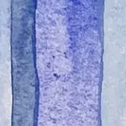
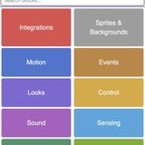

Nicole Kelner
Product builder and content creator
Indie developer who has built 2 apps and instrumented them end-to-end in Mixpanel, running onboarding conversion experiments to find the flow that turns installs into paying users. Before that, nine years of product work as a cofounder, COO, and chief of staff, scaling new and existing products, including a K-12 education company I helped grow from one location to five nationwide, 1,000 students, and $1M in revenue before it was acquired.
Prepared for the Product Manager role on the Product team at Talkspace.
Your match
I like building products for mission-driven organizations. I've done it on open-source projects, as an indie developer, and as part of a founding team.
Things I took from zero to one
 Free Time →iOS · Live on the App Store · 4.8 stars · Nov 2025 – Present. A behavior-change app. Owned the onboarding funnel end to end.
Free Time →iOS · Live on the App Store · 4.8 stars · Nov 2025 – Present. A behavior-change app. Owned the onboarding funnel end to end.- Unplug OS →iOS · In beta, launching 2026. A 24-screen onboarding, iterated to v12 before a line of production code.

So You Want to Work in Climate →Open-source database · 25,000 views in first six months. Contributors and audience are the same people.
The Coding Space →K-12 education company + WoofJS, an open-source IDE · 1 location to 5, $1M revenue, acquired. The one I built with a team.
Past Work
- Founder and Product OwnerFree Time · Unplug OS
- Cofounder and COOThe Coding Space, then Head of Marketing
- Head of OperationsDashboard.Earth
- Founder and Product LeadSo You Want to Work in Climate
- CEO and FounderSmartPurse, acquired by Betabrand
Key metrics
- 55,000 followersArts and Climate Change, my studio. Grown from zero, reaching more than 3 million people.
- $1M in revenueThe Coding Space, the K-12 company I cofounded. One location to five, 1,000 students, then acquired.
- 250,000 impressionsMy illustrated guide to the Inflation Reduction Act, adopted by local governments as their explainer for residents.
- $1.6M budgetDashboard.Earth, where I was Head of Operations. Rockefeller Foundation funded, delivered on milestones.
- 1,000+ downloadsFree Time, my iOS app. Paying subscribers and 4.8 stars, with no paid marketing.
What I do most
- Onboarding and activation ownershipConversion experiments, activation and retention metrics
- End-to-end product instrumentationFeature-level behavior analysis, revenue and subscription analytics
- 0 to 1 iOS product ownershipApp Store launch and release management, beta programs
- Behavior change and habit productsBuilding for people who want to change something they feel bad about
- Prioritization and sequencingBacklogs, roadmapping, OKRs, specs and acceptance criteria
Most minutes logged
- MixpanelInstrumented both apps end to end
- Notion and TrelloBacklogs and delivery, from a 10-person cross-functional team to solo release management
- RevenueCatSubscription state, joined to activation in one dashboard
- App Store ConnectLaunch, release management, per-channel acquisition
- Figma, Xcode & Claude CodeSpecs, and where the two apps actually got built
Build for trust
I design products to help the mental health and wellbeing of my users. My passion this year has been building apps that help people redefine their relationship with technology by reducing screen time, helping them be more present and mindful in their lives.
What brings me here
Talkspace is hiring a Product Manager to own the life cycle: define the problem, set the KPIs, run the experiment, read the result. That is the work I've been doing on my own products for two years, and the domain is one I've already been building in. My apps are about changing a habit you don't feel good about, which is the same trust problem therapy starts from.